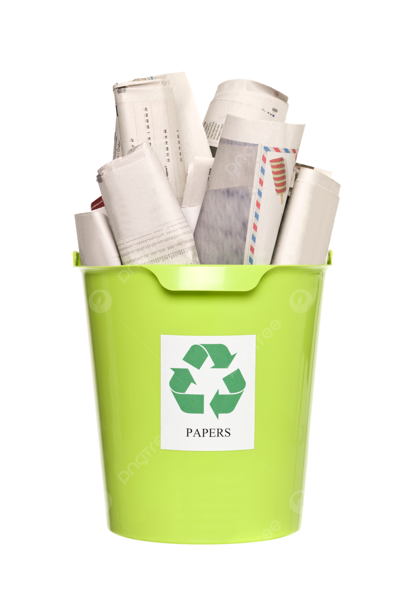

Recyclable waste includes materials that can be processed and reused to create new products, reducing the need for raw materials and minimizing environmental impact. Effective recycling helps conserve resources, reduce pollution, and support a circular economy. This website provides information about recyclable waste, its benefits, and how to manage it effectively.

Facts & Figures
Recycling is a critical component of waste management and environmental conservation. Here are some important facts about recyclable waste:
Recycling helps reduce the volume of waste sent to landfills and incinerators, conserving natural resources and reducing pollution.
Approximately 35% of municipal solid waste is recyclable, including materials like paper, glass, plastics, and metals.
Recycling can save energy compared to producing new products from raw materials. For example, recycling aluminum saves up to 95% of the energy needed to create new aluminum from ore.
Recycling also reduces greenhouse gas emissions, helping to combat climate change by decreasing the need for new resource extraction and processing.
Types of Recyclable Waste
Different types of recyclable waste require specific recycling processes. Understanding these categories helps in effective sorting and recycling. Here are the main types of recyclable waste:
Paper and Cardboard: Includes newspapers, magazines, office paper, and cardboard boxes. Paper recycling helps conserve trees and reduces the need for new paper production.
Glass: Comprises bottles, jars, and containers. Glass can be recycled indefinitely without losing quality, making it a highly sustainable material.
Plastics: Includes containers, bottles, and packaging made from various types of plastics. Plastics are sorted into categories (e.g., PET, HDPE) for recycling into new products.
Metals: Includes aluminum cans, tin cans, and scrap metal. Metals are highly recyclable and can be reused to produce new metal products, saving energy and resources.
Electronics: Comprises items like old phones, computers, and televisions. Electronic waste contains valuable metals and components that can be recovered and reused.
Properly sorting and recycling these materials can significantly reduce waste and promote environmental sustainability.
Solutions
Effective recycling involves more than just sorting materials. Here are some strategies to improve recycling practices:
Follow Local Recycling Guidelines: Adhere to your community's recycling rules and guidelines to ensure proper sorting and disposal of recyclable materials.
Reduce Contamination: Rinse and clean recyclables before placing them in recycling bins to avoid contamination, which can hinder the recycling process.
Support Recycling Programs: Participate in and advocate for local recycling programs and initiatives to enhance community recycling efforts.
Educate Yourself and Others: Learn about what can and cannot be recycled, and share this knowledge with friends, family, and colleagues to promote better recycling habits.
Reuse and Upcycle: Before recycling, consider reusing or upcycling items to extend their life and reduce the overall amount of waste generated.
By adopting these practices, we can improve recycling efficiency, conserve resources, and contribute to a more sustainable future.